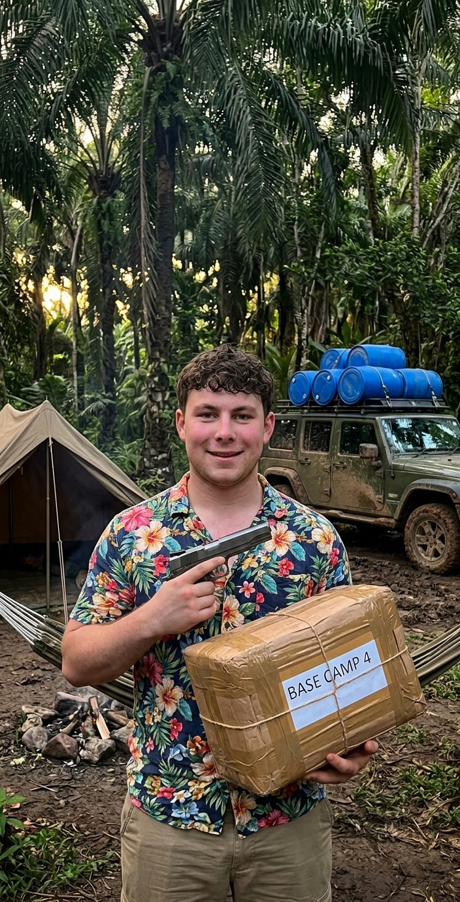

Yuas Eyes Only

Intelligence Brief 1 - 18th June
IntO Stockwell
Situation: Free Meridian Cartel (FMC)
Organization Profile
A highly structured criminal enterprise masking as a "revolutionary" nationalist movement. Capabilities include military-grade weaponry, port infiltration, and forced labor camps. Finances laundered through fronts like San Meridian Logistics and The Free Meridian Foundation.

Señor "El Jefe" Estudente
FMC Leader / HVT- Public Persona: Charismatic community leader; operates El Jefe Burger Hut chain.
- Reality: Ruthless tactician; responsible for mass subjugation and political assassinations.
- Base: Dos Cervezas city.

CocoIna
Key Associate- High-ranking operational associate to Señor Estudente.
- Implicated in cartel logistics and enforcement activities.
- Maintains operational security and internal discipline within FMC ranks.